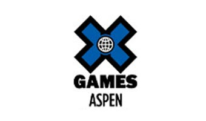

This is a collection of sites summarizing all the happenings from the X Games and ESPYs Awards, two events that ESPN is well-known for. The primary audience of the sites are the sponsors, who use the website to see how their brand was promoted during each event.
Each site contains hundreds of media files from the event, including photos and videos. Sponsors can log in to a password-protected area to view marketing statistic documents.
The original version of the site was built in 2012 on the Expression Engine CMS. It was revamped in 2015 using Mustache and Foundation, resulting in a much simpler and easier-to-maintain experience.
Technologies
HTML
CSS
jQuery
Mustache
Foundation
Highlights

Homepage
A series of websites summarizing ESPN's major annual events, including the X Games and the ESPYs Awards.
Interactive Elements
Website for a startup company bringing empathy and warmth to the personal healthcare experience.